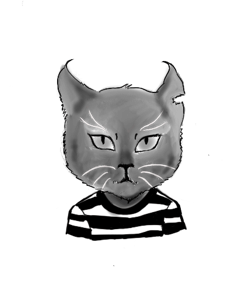
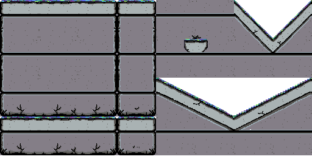
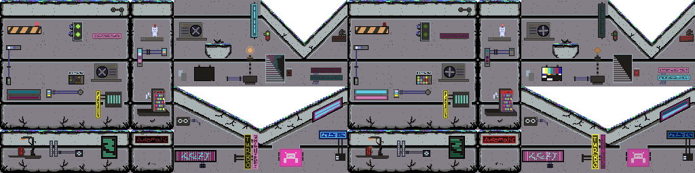

What are we building?
Code Cats are developing a single player, 2D action platformer game titled Metro Neko. With its side-scroller dynamic, Metro Neko will be easy to understand whilst its increasingly challenging gameplay, unique characters and vibrant
atmosphere will keep players engaged.
Who is our target audience?
According to WePC, there are 2.7 billion gamers globally (WEPC 2021). Of this, Asia-Pacific accounts for 49.2%, North America at 25.1%, Europe at 18.6%, Latin America at 3.8% and the Middle East & Africa at 3.4% (WEPC 2021). Taking this
into account, along with the average age of gamers being 33 (GWI 2021), Metro Neko’s target audience will be consumers aged 18-34, marketed towards those in Asia-Pacific and North America.
Competition:
Metro Neko’s competition is mostly mobile games. Google Play Store and Apple App store are the main targets of the game. We mainly focus on user interface, and we are making the game more user friendly while keeping the promotions and
ads to help with finding the right audience. We are also looking to use platforms that boost ranking of Metro Neko in Google Play Store ranking. Lastly, we will be creating a website to accompany the game to introduce it to more people
across the web.
Which platform/s will it be on?
With multi-device ownership not being uncommon in today’s age, 81% of consumers play games on their smartphones and tablets whilst 65% play games on their PC/laptops (GWI 2021). In order for Metro Neko to reach as many players as
possible, it will be made available across multiple platforms, first being introduced on mobile devices (Android and iOS) with further development necessary before being made available on PC.
Key features
GWI states that 70% of gamers play games for one main reason, it is fun. Of that 70%, 50% are more likely to stop playing a game because they either lose interest or the game did not meet their expectations (GWI 2021). Metro Neko’s key
features have been designed with consumer engagement at the forefront. Features include:
- A unique main character
- A defined nemesis
- Enemies to destroy
- Objects/points to collect
- Vibrant world/environment
Who are the characters?
With over 373 million cats kept as pets world-wide (WORLDATLAS 2020), it is obvious that people love cats. Our team at Code Cats is no exception to that statistic and so Metro Neko was developed as a result of our shared love of cats
and animals in general in mind. Metro Neko will feature several cat-based characters, including:
- Senshi: Our hero and the games playable character
- Miyako: Senshi’s nemesis and overall game villain
- White Ghost Cats: In-game enemy/obstacle that cannot be destroyed
- OZombie Cats: In-game enemy/obstacle that can be destroyed
When and where does it take place?
Metro Neko will take place in a city of the same name, in a dystopian-type future where all citizens are cats. The streets of Metro Neko are dark and ominous with vibrant pops of neon colours.
Pre-Production
Story Outline
Welcome to the City of Metro Neko where life is murky and dreadful. A city where crime is soaring with Miyako being the most vicious criminal of the city aggravating the cat’s life. She runs heaps of gangs across the city. Frightening
cats, killing cats and selling drugs are among some of the illegal acts she does. She is an unstoppable criminal, even though the Metro Neko Police department (MNPD) has arrested her so many times she can run away from the hold in no
time. She even works with corrupt governors (Metro Neko Government) of the city.
Senshi is the city’s saviour, he is the hero of the cats, he has been working alongside the MNPD arresting outrageous criminals and gangs and putting them behind the bars. Senshi’s rivalry Miyako is the agitator, making the Metro Neko
a horrible place to live for cats, while this has been going on for a while Senshi is confident that he is going to put a stop to that once and for all. He is convinced that this is the last time Miyako is disturbing the city and he can
bring peace to the city of Metro Neko.
Character Description:
Protagonist:
Name: Senshi
Senshi is a hero from Metro Neko. He is famous for his exceptional sword play abilities. He is well known to locate and catch criminals and put them behind the bars. He is a special and well-respected citizen of the Metro City.
Antagonist:
Name: Miyako
Miyako is a vile criminal from Metro Neko. She is the leader of many dangerous gangs in the city. She is known for being the most dangerous criminal by Metro Neko Police Department. She has exceptional sword play abilities and she is
very fast and nimble when it comes to running away from sticky situations.
Enemies:
Type: Ghost Cat
Ghost cats awaken from the graves of the City of Metro Neko. Being killed innocently by the criminals of the city they are full of hate and anger. They roam around relentlessly and can’t be killed. Beware and always avoid them, they
are already dead.
Type: Zombie Cat
Brainless and agile, they can run after their pray, eat their brains and turn them into Zombie cats as well. They are part of an experimental disaster ran by the corrupt governor of the city. Although they can be killed, you need to be
very cautious in doing so as they are fast.
Technological Capabilities/Constraints
Early Prototyping
In order for our team to fully assess the validity of the design of our game and uncover any potential practical issues, we committed to completing a 1 level prototype of the game. From this early protype we can analyse four main
components of our games design, structure and capabilities. These components include:
- Representation
- Precision
- Interactivity
- Evolution
This prototype will work as the basis for all testing and feature implementation.
Production
Design
Character design:
All characters in Metro Neko are based on different types of cats. In order to avoid our characters looking too similar, we ensured that each one had their own unique distinguishable features.
Protagonist:
- Name: Senshi
- Type: Cat
- Colour/s: White
- From: Metro Neko
- Distinguishable Features: Sword

Antagonist:
- Name: Miyako
- Type: Cat
- Colour: Black
- From: Metro Neko
- Distinguishable Features: Left ear

Enemy:
- Type: Ghost Cat
- Colour: White
- From: Metro Neko
- Distinguishable Features: Oval shape
Enemy:
- Type: Zombie Cat
- Colour: Mixed
- From: Metro Neko
- Distinguishable Features: Bandages

Level Design:
Background:
The level backgrounds of Metro Neko are an interpretation of a city skyline at night. We wanted to keep the basis of the shapes indicative of this type of scape but also implement a dystopian and futuristic/abstract style to them. Pops
of Neon colour were also added to emphasise the futuristic feel of the overall level as well as compliment the level platforms and animations

Platforms:
When designing the in-game platforms, we wanted to ensure that they had the look and the feel of city streets whilst still keeping to our dystopian/futuristic theme. Taking inspiration from the bright and busy streets of Tokyo, we
included a number of animations on the platforms, as well as included the bright neon colours from the background to complete the look.
Basic Platforms

Platforms With Animations

In Game Object Design:
- Name: Silver Coin
- Type: Collectible
- Colour/s: Silver
- Purpose: Players collect coins to increase their overall score. A silver coin is worth 50 points.

- Name: Gold Coin
- Type: Collectible
- Colour/s: Gold
- Purpose: Players collect coins to increase their overall score. A gold coin is worth 100 points.

- Name: Milk Bottle
- Type: Collectible
- Colour/s: White, blue, black
- Purpose: When a player collects a milk bottle, they are made invulnerable for a short period of time.

Interactive Design Features:
The gameplay consists of multiple basic interactive design elements. This includes:
Words: Providing users with gameplay tutorial information that is clear and easy to understand, also allowing them to re-read and access the information from the main menu in case they have dismissed them by accident.
Audio visuals: Users are also allowed to interact with the game using videos, soundtracks, images, typography, the user interface and of course the gameplay.
Time: The game consists of levels and a progression system. Each level gets harder and more challenging which takes longer to progress and more rewarding as the player progresses through each level.
User interface interactions:
Trailer: The user is presented with a short 10-15 second video outlining the story and introducing the main character as well as the protagonist.
Menu: The user is then presented with the main menu of the game, this includes the logo and the name of the game, the soundtrack of the game as well as the start menu. The menu consists of “Play”, “Tutorials” and “Exit”.
Story: Upon starting the game for the first time, there is a longer video expanding on the story, using audio visuals and words at the same time.
Gameplay: The game starts presenting the main character and the first level to overcome, the tutorials are interactive in a sense that they will run as necessary in different situations. They will pause the game and let the user read
and dismiss by clicking/tapping on the display. The second playthrough will not have the tutorials enabled. Health bar and score system also available to the users as visuals.
User Interface controls:
The UI controls are as follows:
Menu:
- Touch Screen: tap on the menu items to perform the task described.
- Non-touch screen: left click using a mouse or moving up and down with directional pads on the controller and then selecting using the A/X button.
To move left and right:
- Touch screen: Hold the analogue displayed on the screen and move it to the right to move the character to the right and vice versa.
- Non-touch screen: Use keyboard arrow keys or controllers directional pad to move left and right respectively.
To jump:
- Touch screen: Tap anywhere on the right side of the screen to perform jump action.
- Non-touch screen: Use keyboard space bar or controllers A/X button to perform jump action.
Exit/access main menu:
- Touch screen: Tap on the gear icon displayed on the top right corner of the display, then tap the selection then proceed.
- Non-touch screen: use the mouse to click on the gear icon displayed on the top right corner of the display and then click the selection and proceed.
Interactive structure:
The game consists of one chapter, which includes 10 levels. Depending on how you proceed to beat the game based on different choice, the ending will differ, and the storyline will finish differently. This is to increase the replay
ability of the game.
The game is single player and requires no connection to the internet to play.
Scenario 1 (opening cinematic):
Scene No. 1: Senshi running and jumping on platforms after Miyako.
Scene No. 2: He finds her on a long narrow bridge.
Scene No. 3: They stare at each other for a second before unsheathing their swords.
Scene No. 4: They attack each other.
Scenario 2 (game story):
Scene No. 1: Senshi is coding on his laptop while the tv is on in the background.
Scene No. 2: TV in the background: “NEWS reporter: Miyako has escaped the prison.”
Scene No. 3: Senshi is irritated, and he is getting ready to put an end to her troublemaking.
Scenario 3 (ending no. 1):
Requirements: Beat the game without dying.
Scene No. 1: Senshi defeats Miyako and puts her behind the bars.
Scene No. 2: He starts his press conference and celebrates the defeat of Miyako.
Scene No. 3: Miyako stays in jail forever and a day.
Scenario 4 (ending no. 2):
Requirements: Beat the game.
Scene No. 1: Senshi defeats Miyako and puts her behind the bars.
Scene No. 2: He starts his press conference and celebrates the defeat of Miyako.
Scene No. 3: Miyako manages to run away from the jail and make trouble for the city of Metro Neko once again.
Scenario 5 (game over):
Requirements: die during the game play.
Scene No. 1: Miyako purring and counting money in a dark room while she has her feet on the table.
Gameplay
Object of the game:
The object of the game is for the player to get to the last level, putting a stop to the evil Miyako, locking her up for good once and for all. To achieve this, players must progress through 10 levels, with the difficulty increasing as
each level progresses. Across each level, players will need to avoid/destroy enemies whilst collecting coins, which earn them points towards their overall high score.
Gameplay description:
Game play is consisting of jumping, running, health bar and score system:
Jumping: it allows the player to jump on the platforms, jump over obstacles to avoid enemies and dangers, and to jump on the enemies to kill them. Failing to jump on platforms or hitting obstacles or enemies will result in death and
game over.
Running: it allows the players to move around the level as well as choosing different paths and platforms.
Health bar: A visual representation of the main characters health. Upon being hit by an enemy the health bar decreases.
Score system: A visual representation of the score achieved by the players.
Game play specifications:
Genre: The genre is an action platformer, and the gameplay is around jumping, running, and overcoming obstacle and enemies along the way to finish each level.
Difficulty: The difficulty of the game increases every time a player fails to complete a level, as a result increasing the number of obstacles and enemies. However, completing a level successfully will increase the difficulty of the
next level.
Time to complete: The game should take less than 1 hour to complete all 10 levels. To get both endings you would require 2 hours to complete the game.
Level description:
Each level is consisting of a different environment, platforms, obstacles, and enemies:
Environment: There will be 10 levels and each level represent a different time of the year and season.
Platforms: Platforms will be placed differently across each level, and they will follow the same environmental look and feel.
Obstacles: Obstacles will be placed on the platforms and sometimes under the platforms to add more dangers to each level.
Enemies: Enemies will roam on the platforms and guarding in tricky to jump situations.
Sound design description:
Opening cinematic soundtrack: To include Presto tempo music using 168-200 beats per minute. This is to increase the tension of the fight shown in the cinematic.
Game story soundtrack: To include Larghissimo tempo music using under 24 beats per minute to add more immersive dynamics to the game story.
Main Menu soundtrack: Same music from the Game story soundtrack to continue playing in the main menu.
Level soundtrack: To include Moderato tempo music using 108-120 beats per minute. This is to increase the tension and immersions of players into the environment.
Senshi: To have natural serious human voice, with some characteristics from Cats like, purring and meowing.
Miyako: To have high pitch serious human voice, with some characteristics from Cats like, purring and meowing.
White ghost cats: To have low pitch serious human voice whispering, with some characteristics from Cats like, purring and meowing.
Zombie cats: To have zombie like moaning, with some characteristics from Cats like, purring and meowing.
Development
In order to fully realise Metro Neko, our development team utilised a combination of software to design and create the game, these include:
- Unity Version 2019.4.22f1 - Unity was used to create game itself.
- Adobe Photoshop Version 22.4.1 - Photoshop was used to create in-game assets including characters, objects and level backgrounds.
- Adobe Illustrator Version 25.2.3 - Illustrator was used in addition to Photoshop to assist in the creation of in-game assets.
- Adobe Animate Version 21.0.6 - Adobe animate was utilised to animate character movement for the game as well as a concept trailer.
As we are using Unity to develop our game in conjunction with Adobe Creative Cloud software, there are no specific hardware requirements for development as all of those products are available across numerous devices.
Testing
Bug Identification
Unity in-built support allows for direct bug identification and resolution. There are three ways to access this:
- In the Menu – Help > Report a bug
- Executable through the installed directory
- Executable through the installed directory
As per user documentation there are a multitude of reasons for bugs and various ways we can resolve these issues.
Feature Creep
Software vulnerability will be minimised using UNITY as an effective engine to program our game.
UNITY has substantial supporting documentation readily available online as well as a milieu of video tutorials which will guide the implementation of various features, assets and across different formats.
As previously noted, feature creep for this project has been assessed as minimal risk based on our members’ technical and creative experiences. The features should be simple, functional and the plan will have no excess or conflicting
attributes.
Game Engagement
Game engagement will be tested prior to release.
All members will test version 1 to see if the levels need to more challenging, this will also assess overall user experience and we will ensure we adapt changes based on feedback. Future testing may potentially be tested via a
randomised selection of external users.
Launch
Final Testing Stage
Prior to the initial first release of Metro Neko, our development team will go through final testing phases. This includes testing for any minor/major bugs and fixing or re-designing any necessary elements. Some of the main elements
that will be focussed on at this stage of testing will be the User Interface, visual range and texture quality as well as any animation improvements.
Version 1 Release
Version 1 of Metro Neko is released on mobile devices. The release will feature one fully realised level of the game.
Post-Production
With the game now out on an initial release, the team will focus on maintenance activity. This includes:
- Minor/Major bug correction - The team will monitor reports from players, releasing fixes where necessary.
- Patches/Updates - The team will continue to work on developing the game, releasing patches and updates for the further 9 planned levels of the game.
After the release of a fully completed 10 level game on mobile devices, the team will look into further development of a sequel, dependant on player reviews, as well as the potential for PC release and monetization.